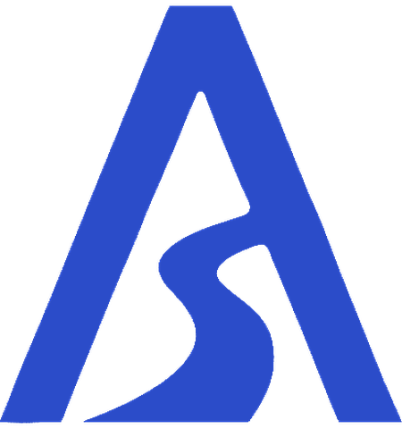

Ayfer Kaya
I ship AI products solo, and I teach the next generation to build. ex-Meta, ex-United Nations.
Ajanda, my AI platform, went from idea to paying users, angel investment, and a national startup prize. Before that: hiring deep-tech teams at Meta and a VC-backed SaaS scale-up, risk intelligence at Dow Jones, refugee protection at UNHCR.
Selected work
Tap a tile
 that's me
that's me
Entrepreneurship education for the generation that will build with AI.
I am developing a hands-on entrepreneurship programme for high schools. Students should not only learn about innovation and technology; they should experience turning an idea into a real project. It is designed for schools that want students to become confident makers, not passive technology users.
From idea to project
Students identify a problem, shape an idea, test assumptions, build a simple prototype, and present their work clearly.
AI as a creative tool
Students use AI responsibly as a thinking, research, design, and prototyping partner: not a shortcut, a tool for better execution.
Real-world confidence
Communication, initiative, teamwork, and ownership: the skills students need whether they become founders, engineers, or leaders.
Interested in bringing this to your school? Let's talk.
Notes
WritingEssays and working notes on building AI products solo, product judgment, and where policy meets AI.
First notes are on the way.
I have worked across very different worlds: refugee protection at UNHCR, risk intelligence at Dow Jones, technical hiring at Meta and a VC-backed SaaS scale-up, and now my own AI product company. That range is the advantage: I can work credibly with institutions and still move fast enough to ship. Around the products, I support Ankara's AI builder scene where I can, mentoring at hackathons, facilitating sessions, and opening my network to bring more people in.
- → Building Ajanda
- → Developing an entrepreneurship programme for high schools
- → Mentoring and supporting AI build events in Ankara
- → Sharing my work more openly, after years of doing serious things too quietly
- → Open to roles and collaborations
- → BİTES Special Prize, Yeni Fikirler Yeni İşler 2025
- → Angel investment for Ajanda
- → 2.5x annual hiring target at Meta
- → Trained 200+ government officers with UNHCR